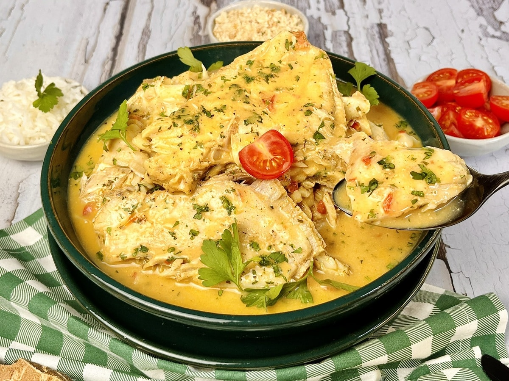

Peixe e leite de coco
Sobre a Receita
Uma combinação que dá muito certo: peixe e leite de coco. O porquinho, um peixe de água salgada, possui a carne macia, perfeita para ensopados. O coentro traz um toque de frescor, além de aromatizar o preparo. Com um pirão e uma saladinha fresca, você não precisa de mais nada.

🧾 Ingredientes
- 1 kg de filé de peixe-porquinho
- 1 colher de sopa de sal (ou a gosto)
- 1/2 colher de chá de pimenta-do-reino (ou a gosto)
- 2 colheres de sopa de azeite de oliva a gosto
- 1 cebola média (110 gramas)
- 2 dentes de alho
- 2 colheres de sopa de coentro ou salsa picado (ou a gosto)
- 1/2 colher de chá de páprica (ou a gosto)
- 2 tomates médios (200 gramas)
- 200 ml de leite de coco
👨🍳 Modo de Preparo
- Preferencialmente, utilize um peixe fresco, mas caso esteja congelado, tire do freezer no dia anterior e deixe descongelar naturalmente na geladeira. É possível utilizar tanto o leite de coco caseiro (que é menos gorduroso) quanto o industrializado;
- Coloque os filés de porquinho em uma tigela e tempere com sal e pimenta-do-reino. Espalhe bem os temperos pelos filés e deixe descansar por cerca de 10 minutos;
- Recipiente com tomate, alho e cebola. Enquanto isso, descasque e pique a cebola em cubos pequenos.
- Descasque e pique o alho em cubinhos. Lave e pique o coentro bem fininho. Lave e corte o tomate em cubos médios;
- Panela com alho e cebola. Em uma panela grande, aqueça o azeite e refogue a cebola, com uma pitada de sal, até murchar.
- Adicione o alho e o coentro picado e refogue, mexendo de vez em quando para não queimar, até dourar levemente;
- Acrescente o tomate, tempere com sal e páprica.
- Misture bem para incorporar o sabor. Refogue até o tomate começar a murchar.
- Adicione o leite de coco, mexa bem e deixe cozinhar por 2 minutos;
- Acomode os filés de peixe no molho, feche a panela e deixe cozinhar por 15 minutos, ou até o peixe mudar de cor e cozinhar completamente;
- Abra a panela, experimente e, se preciso, acerte o sal. Você pode finalizar com coentro ou salsinha, se quiser - traz frescor para o prato;
- Já pode servir o porquinho com leite de coco! Combine com arroz branco, pirão e salada de tomate.
⏱️ Preparo
45 minutos
🔥 Tempo de cozimento do peixe
15 a 20 minutos (dependendo da cor do peixe)
🕒 Total
aproximadamente 1 hora e 45 minutos
🍘 Rendimento
cerca de 5 a 6 pessoas
💰 Custo Médio
aproximadamente R$ 150 a R$ 250